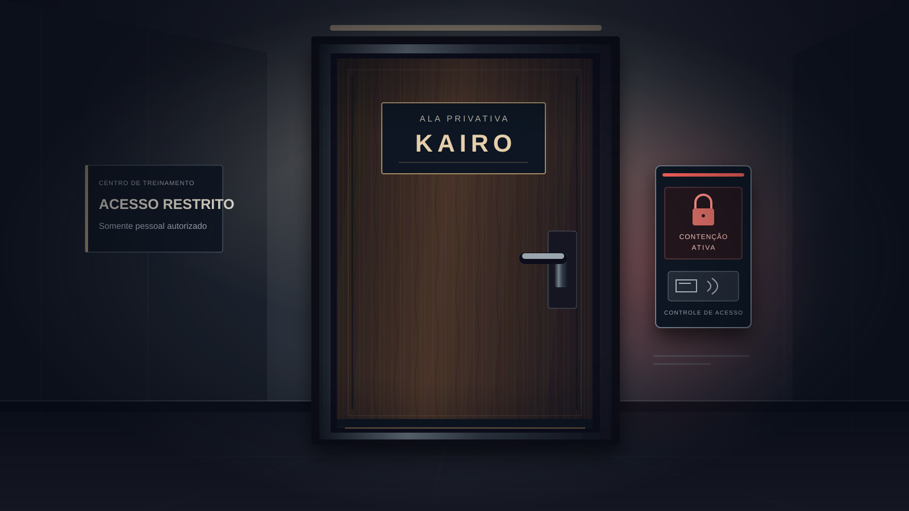

A História
Prólogo
Faltam poucas horas para a grande final do campeonato mundial de eSports. O favorito, o jogador profissional Kairo, desapareceu da gaming house da organização sem avisar ninguém. Ele não atende o celular, não apareceu no café da manhã e faltou ao treino da manhã.
O último lugar onde esteve foi o próprio quarto, uma ala privativa com sala de treino, cozinha e sala de servidores, trancada por uma fechadura eletrônica programável. Você, técnico de TI da organização, configurou esse sistema no mês passado e recebe a missão de entrar e descobrir o que aconteceu.
Ao detectar a sua entrada, porém, a fechadura ativa o lockdown: qualquer acesso não liberado pelo morador é tratado como invasão. Em 5 minutos o alarme dispara e a segurança chega. A única forma de reverter o bloqueio é reprogramar a fechadura pelo painel do corredor de saída, que exige um PIN de seis dígitos. Para obtê-lo, é preciso investigar todos os ambientes da ala, reunir as pistas e entender por que o Kairo sumiu.

Cronologia
- : Kairo é visto pela última vez no corredor dos quartos, voltando do treino. Às 23h41, o registro da fechadura anota a entrada dele no quarto. Não há registro de saída.
- : a organização percebe a ausência. Ele não compareceu ao treino da manhã, o celular está desligado e o quarto continua trancado por dentro.
- : a Central de Segurança chama você para abrir a porta com rapidez e discrição, antes que a imprensa descubra.
- : você aproxima o crachá do leitor, a fechadura entra em lockdown e o relógio de 5 minutos é ativado. Se o tempo acabar, a segurança chega e encontra você dentro do quarto.
Personagens
- Kairo
- Jogador profissional e favorito ao título. Treina até de madrugada, fala pouco fora das partidas e carrega a pressão de ser o rosto da organização. Todos queriam saber onde ele estava; poucos perguntaram como ele estava.
- Você (técnico de TI)
- Responsável pela rede e pelos acessos da gaming house. Conhece os sistemas, inclusive a fechadura, mas não sabe o que aconteceu dentro do quarto.
- Segurança da organização
- Acompanha a ocorrência por rádio e quer a porta aberta com discrição, para evitar prejuízo à imagem da organização antes da final. Chega quando o alarme dispara, e o que encontra depende do que você fizer.
Qualquer acesso não autorizado ao quarto ativa o protocolo de lockdown.
Quer saber mais sobre o mundo dos jogos competitivos? Leia sobre esportes eletrônicos na Wikipédia (abre em nova aba).
O nome do protocolo
No grego antigo, kairós é o “momento oportuno”: não o tempo que passa no relógio, mas a hora certa de agir. É essa a ideia por trás do jogo. Você tem 5 minutos no cronômetro, mas o que decide o seu destino é o que faz em cada um deles: onde procura, o que anota, quando arrisca um código e quando prefere esperar mais uma pista.
O nome do jogador, o nome do protocolo e a contagem regressiva falam da mesma coisa: um momento que não volta.
Ambientação sonora
Transcrição: zumbido grave de servidores, estalos de ventoinha e um alarme distante.